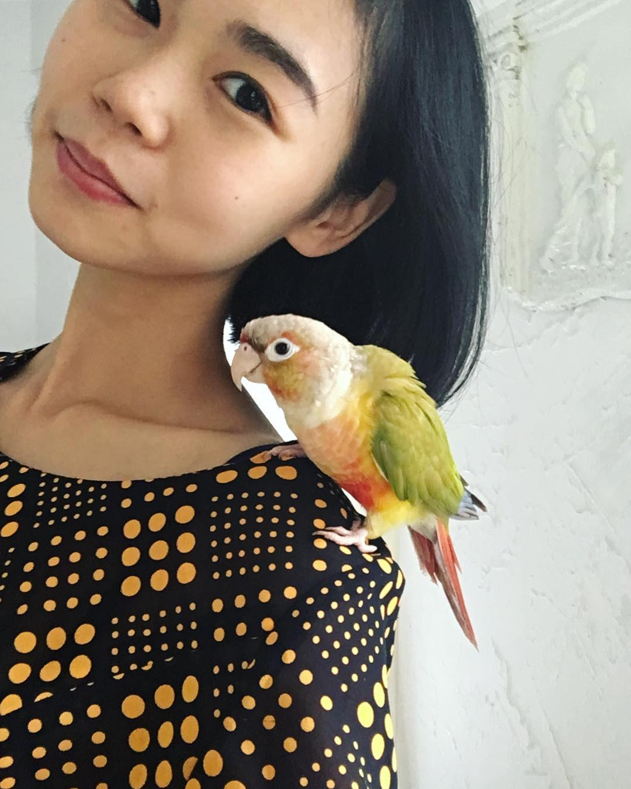

亂數假文
「我是全台灣繳最多學費的CEO，」宏碁集團創辦人施振榮坐在金華街家中，靠近大片落地窗陽光灑落的專屬座位，談起過去失敗的歷程，笑得燦爛。但他直說自己也賺了錢，總得回饋社會。他回饋社會的方法，就是創設「王道未來大學」，培養有視野跟格局的企業領導人。 「年輕人都說，對的事情就是王道，」總將企業經營的王道精神掛在嘴邊的施振榮，重複提及創造價值與利益平衡的概念，對這樣的企業經營心法，他深信不疑，認為將王道精神融入不同領域，也會得到不同的化學作用。 過去，施振榮開辦過「全球王道企業家薪傳班」，要培養能面對二十一世紀各種挑戰的企業家；也和會計師劉順仁給企業家們開設「王道經營會計學」，現場座無虛席。 但這次，他要籌設的，是大學。 王道未來大學，在八月底正式啟動。以「王道與創意」的九堂課程揭開序幕。說是大學，卻沒有學位、預算或是校園，沒特定型態，反而比較像是新型態的共享共創的企業家學習平台。「你問我這所大學會怎樣？我也不知道！」施振榮攤攤手笑開懷。只說會將過去三造宏碁的經驗融入課程，培養更多讓台灣在世界舞台發光的領導人。 施振榮接受《天下》獨家專訪，談王道未來大學，如何改變未來。以下為專訪摘要： Ｑ：為什麼台灣現在需要王道未來大學？企業領導人出了什麼問題？ Ａ：因為短視阿，台灣企業領導人看短不看長，利用現在的優勢去賺錢，沒考慮核心價值，遲早要出問題的。 王道未來大學要培養專業的領袖人才，因為領導人的思維、能力跟視野格局會影響整個企業。台灣沒人教這個，因為過去都是靠自己學習。我常講要好高騖遠，但要量力務實，有策略、漸進式地。務實就是確實用有限的資源創造最多的價值。 Ｑ：台灣企業領袖沒有這樣的能力嗎？ Ａ：不是說沒有啦！ 只是領導人每天看到聽到的會讓自己的格局越來越小。領導人因為擁有很多資源，社會責任也更重，要善用資源創造社會價值。任何人任何組織存在的價值就是對社會有貢獻。我每天也一定會問自己，活著的意義是什麼？我們要刺激領導人去問問題，新的視野就是一種刺激。 Ｑ：領導人需要具備的能力是什麼？ Ａ：第一是系統觀的創新。因為你要考慮整個系統，任何一點問題都會影響你整個系統的輸出狀況（output），這是第一步。第二個你要確認要改革的部分很重要，而不是想到什麼就創新。 舉例來說，三年多前我回到宏碁，我知道只有產品創新是不夠的，應該讓價值要體現在用戶市場端，很多問題需要溝通，不只是產品。組織再造也是系統創新，多個系統相互運作，提升價值。 再來就是跨域整合的能力，要重視別人存在的價值，也要盡力了解不同系統運作的關鍵。過去習慣用價格競爭，不要用價格競爭，像是新南向，應該尊重當地的文化，跟當地生態共創價值。 再來是探索根源問題的能力，要靠經驗累積和懂得問深入的問題，才能真正探索問題。知道問題的根源之後，不要踩那些克服不了的地雷，跳過去就好。比如創品牌，問題的根源是台灣的形象很難打，我就不提我來自台灣。或是一開始宏碁打市場，從台灣派人出去，但他們對當地社會不了解，後來就用當地人才經營。 Ｑ：這些能力怎麼透過王道未來大學的課程學習？ Ａ：課程第一發是王道與創意，這是和姚仁祿老師合作的課程，會先談歷史，因為歷史告訴我產業變化，我也會有危機意識，知道未來大概怎麼發展。再來談創意。 因為創新要有三要素：價值、創意和執行。如果創意沒有落實，沒有創造價值就不是創新，因為可能浪費資源或傾家蕩產。最後是美感。美感不只是觀賞的美，而是看不見的美，包括人的修養，像王道精神裡面追求利益平衡，因為充滿希望也很美。之後會有「王道與問責」，會計就是為了問責（accounting&accountability）。會計很短視，短期內有自產物價表、損益表，用現在的會計去做問責會有問題。接下來是「王道與傳承」談企業領導人如何傳承價值觀、形象和人脈網絡給接班的人。 過去的王道薪傳班、王道講堂都是階段性任務，需要翻新，加上早期師資從美國來，成本比較高。 王道未來大學有別於目前學校教育的型態，有互相分享的過程，也不要制式化說一定要上多久的課，有重要議題就找教授合作開課。這個未來大學沒有預算、沒有學位也沒有校園，也不受教育部管轄。我一路談未來大學，什麼是未來？未來就「是不知道」。所以這個大學會長成什麼樣子？我也不知道（笑）。 一個月前我提出「新微笑曲線」，指出未來有價值的第一個是體驗經濟，第二個是共享經濟，讓大家共享資源。 王道未來大學也是如此，要變成讓企業家跟講師共同創造新的模式的課程。這些企業家不是學員，而是學習夥伴，共創的過程更重要。舉例來說，每次我開策略會議的時候，從願景、到組織的關鍵能力與策略擬定，每次都跟我腦筋想的不一樣，可是都很滿意，因為是腦力激盪有共識的東西。 Ｑ：中間有沒有遇到困難？ Ａ：沒有挑戰的事情就不值得做，因為創造不出新的價值，沒有冒險是最大的風險。最大的困難是，將腦中的知識整理成簡單有邏輯的訊息。 重點是尋求突破，不要以井觀天。所以我也學習美國、歐洲的創新教育型態，放到王道未來大學的課程。台灣對社會的貢獻，讓知識全球化。企業家要不斷問自己，台灣未來對社會發展要有多少貢獻，台灣對世界的意義是什麼。
產來義大
跟女友交往2年多，在準備結婚的階段 就已經跟對方家人弄得很不愉快.... 主要還是他們意見反覆、想舖張又只出一張嘴不出錢 就已經夠亂了，遠房親戚也來出意見..... 現在也決定預算能負荷就盡量滿足長輩需求，畢竟這婚禮就是辦給家族看的 但不開心的點在於，真的是等到要成為家人的時候 原本還算和善的樣子才會露出真面目 尤其那種不相干的親戚，也在那邊咄咄逼人出意見，實在很想動怒..... 我爸則是勸我這種事弄不和，很可能吵一輩子 要我盡量不要撕破臉、好好講 只是每次討論都很不愉快 本來的一件喜事，搞到我跟女友都很不開心 甚至為此開始吵架 想到未來還要跟他們成為家人就覺得厭煩.... 好吧，先承認我只是想抱怨一些結婚234 畢竟這話也不好再跟女友再說了 唉....
家顆當時微小
剛開始是由我主動搭訕而認識這女生的 認識過程就不多做解釋 我們彼此住很近騎車只要兩分鐘 後來她到外縣市念書 火車車程就要三小時 所以幾乎很少回來 剛認識時一度想放棄這段友誼 當時認為和她之間差距滿大的 我18歲開始工作 現在退伍兩年 而她是台灣能排上前五的國立大學研究生 後來發現自己和她很聊得來 有很多共同的興趣 無話不談 她也常和我分享自己的心事 生活點滴 等等 在聊天時 她總是會很認真的回覆 從來沒有給過我任何敷衍的感覺 也曾主動提議寒假要和我一起出去玩 她也說過覺得我很溫柔 真心相待 總是很認真的看待她說和分享的事情 能遇到我這樣的人是她最幸運的事 前陣子聊天 她提到有個喜歡的男生 而且和他相處得不錯 當時我做了錯誤的決定 也向她表明自己其實很喜歡她 因為當時心想連說都不說 肯定沒機會 但當時她表示無法回應我的感情 希望我們還是好朋友 那天後我們確實維持著一樣的關係 沒有變質 沒有尷尬 上面所說的那些事情 也是在我表明心意後 她才說的 但最近這兩個禮拜 她開始說課業比較忙 我也就暫時不打擾她 在上禮拜三 她突然告訴我她交男朋友了 我說了很多祝福她的話 也希望她以課業為重 感覺像交代遺言一樣 哈哈 其實我並沒有那個肚量 我沒有勇氣看著自己喜歡的人身邊陪著她的是別人 很想從此消失在她的世界 但又覺得 她也是個很好的女孩 對人也很真 沒有半點心機 有點捨不得 覺得不知道該如何做 才是最好的選擇 希望大家開導開導 